需求说明：沃尔玛4个平台报表需补充解析 ”Partner GTIN” 这个字段保存到数据表amazon_report_crawler.walmart_report_detail，并同步到 polaris2_by.walmart_report_detail。
需求背景：BI系统沃尔玛平台部分财务成本费用（平台运费、仓租、退款等）采用订单关联分摊，部分记录无订单号会导致费用分摊不准确，实际可使用平台报表中的”Partner GTIN”字段进行产品维度关联及费用分摊和成本核算，而目前沃尔玛平台报告中解析的字段无”Partner GTIN” 这个字段，实际原始报告中是有这个字段的，所以需要在解析平台原始报告的时候将这个字段进行解析保存到数据表字段中。
需求详细说明：
1.Walmart 平台4个平台报告：自定义结算明细、月度结算明细、自定义运费明细、月度运费明细，其从佰易业财系统中下载对应的原始报告csv文件中都存在”Partner GTIN” 这个字段。
1.1佰易业财系统中4个平台报告对应的下载界面
Walmart > 下载详情
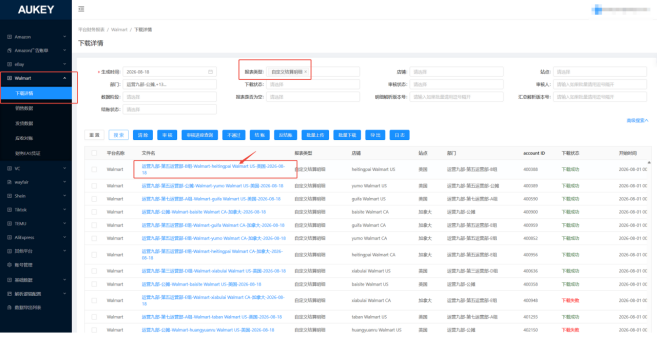
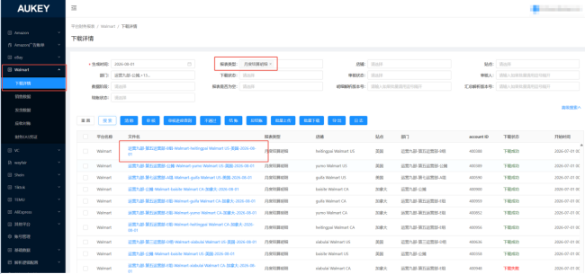
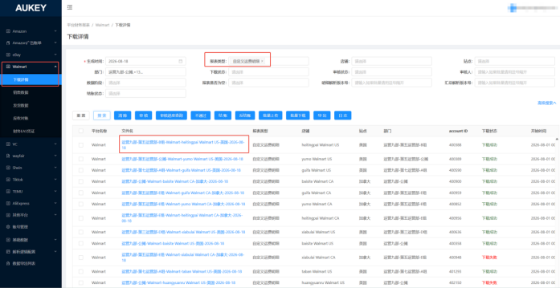
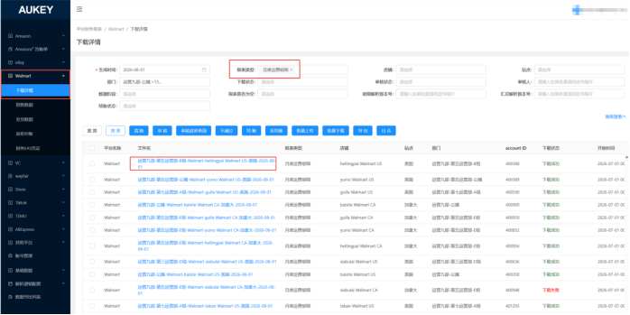
1.2 Walmart后台中4个平台报告对应的下载界面
结算明细下载：
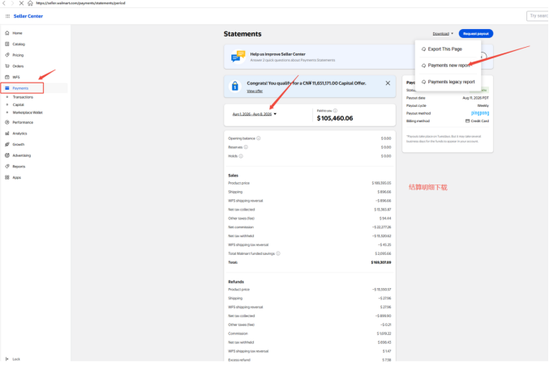
运费账单明细下载：
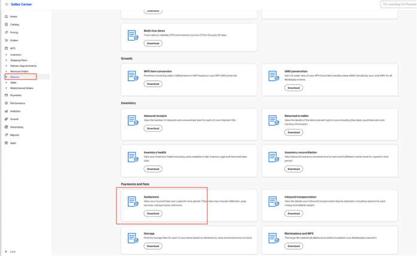
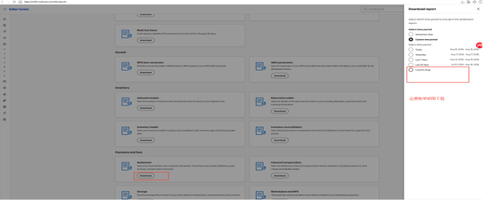
1.3 Walmart 4个平台报告原始csv文件（从业财系统中选择对应报告类型进行下载,跟从后台下载的csv文件是一样的）
自定义结算明细：
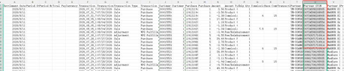
月度结算明细：
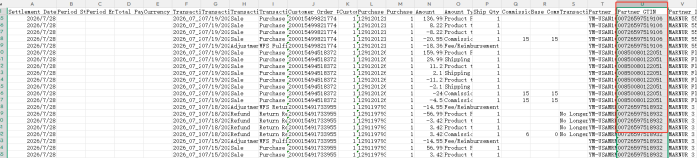
自定义运费明细：
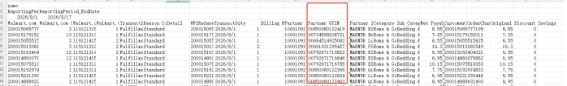
月度运费明细：
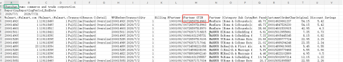
2.目前信息部业财系统相关开发人员已经将Walmart 平台这4个平台报告的原始报表中的部分字段数据已解析到了数据表中：amazon_report_crawler.walmart_report_detail，但是目前该数据表无”Partner GTIN”这个字段。现需要新增解析这个字段到该数据表中，具体需求内容如下：
2.1业财系统解析Walmart平台这4个平台报告时需要将原始csv文件中的”Partner GTIN”这个字段解析到数据表：amazon_report_crawler.walmart_report_detail中进行存储(例如存储为：partner_gtin字段)。
2.2除了实现最新报表需要支持”Partner GTIN”字段解析以外，2025-01-01至今的历史报表也需要重新解析存储至amazon_report_crawler.walmart_report_detail，并确保不要重复、不要遗漏。
2.3最后需要将重新解析存储后的数据表amazon_report_crawler.walmart_report_detail中2025-01-01至今的数据重新同步到polaris2_by.walmart_report_detail，并确保不要重复、不要遗漏。